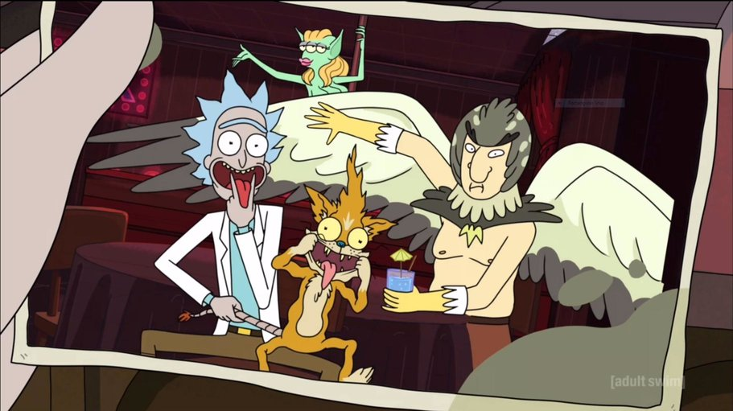

About Rick
Rick is very old and very smart human (if we could call him that). In his family garage, he is always working on a new invention. Sometimes his experiments could result in a catastrophic outcome. Then, he will show no regard to anyone and travel to another dimension. He is always drinking to suppress his sadness even though he don't show that side of him.
Rick with his friends
Rick Characteristic
- He tells it as is.
- He breaks 4th wall.
- He's very intelegent.
- He's funny.
Rick Friends
Eventhough Rick would not admit it, I think his best friend is Birdperson.